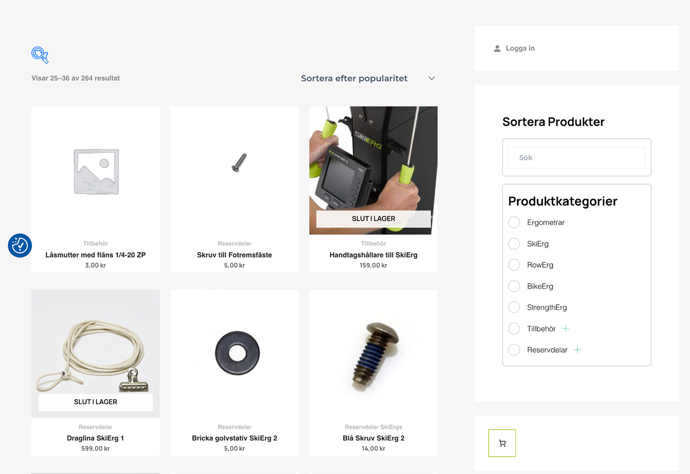

Case
Concept2 Sweden
E-commerce migration & B2B automation
Role: Graphic Designer & WordPress Developer
Scope: UX/UI · WordPress · WooCommerce · B2B E-commerce
- +72% YoY order growth
- 10+ hours/week saved
- +54% PageSpeed improvement
- Scalable B2B sales and reduced internal friction
Problem
Manual invoicing slowed down growth
Customer service staff spent 15–20 minutes per corporate order manually handling invoices, creating friction and limiting scalability.
Goal
Automate workflows and save internal time
The goal was to remove manual invoice handling, simplify the checkout experience and enable scalable B2B sales without increasing workload.
Design process
Migration, restructuring & UX optimization
I led a full migration from Shopify to WordPress/WooCommerce, redesigning the checkout and product structure with a focus on automation, performance and long-term scalability.
UX research
From customer service calls to on-site solutions
UX research was conducted by observing Concept2's customer service team and identifying recurring questions received via phone support.
It became clear that customers often:
- Did not know where to locate the serial number on their ergometer (required for service requests)
- Wanted to perform basic maintenance or troubleshooting themselves
- Needed beginner guidance for using the machine correctly
To reduce support load and empower users, I designed a dedicated Support section including:
- Beginner usage guides
- Common service issues and self-fix instructions
- Clear visual guidance on how to locate the serial number
- A direct contact option when self-service was not sufficient
This shifted support from reactive to proactive and reduced unnecessary service calls.

Solution
Automation, clarity & scalable B2B sales
The final solution combined automated invoicing, a simplified checkout experience and a proactive support system designed around real user needs.
Tech stack
WordPress · WooCommerce · Automated PDF Invoicing · Responsive Design · SEO Optimization